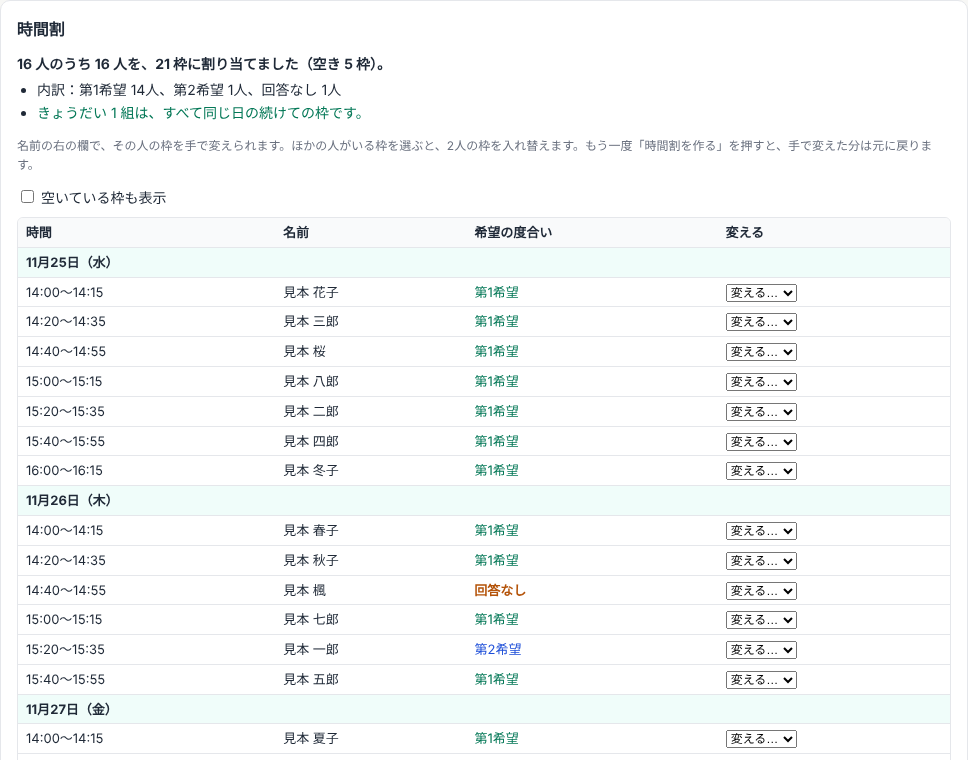

面談の日程の割り当て
個人面談・三者面談・保護者面談・社内の 1on1 などで、集めた希望の回答から、できるだけ希望どおりで、重ならない面談の時間割を作ります。回答は「第1希望・第2希望…の日時」「○△×の表」「都合の悪い日時」のどの形でも読めます。きょうだいは同じ日の続けての枠に入れられます。できた時間割は一覧で印刷し、1人ずつの「日時のお知らせ」の紙（1枚に4〜8人分、点線で切り分け）も印刷できます。ソフトのインストールは不要で、いつものブラウザで動きます。
500円（税込・買い切り）
お試し版はすべての機能を使えて、割り当て・印刷・保存は回答の先頭10人までです。決済が終わると、そのまま製品版の画面に移動します。ブックマークしておけば何度でも使えます。

見本のデータ（架空の学級の16人）を、3日間・1回15分の21枠に割り当てた例。氏名は説明用のもので、実在の人とは関係ありません。
こんなときに
- 個人面談・三者面談の希望調査の紙やフォームの回答を見ながら、重ならないよう手で時間割を組んでいる
- 希望が同じ日・同じ時間に集まって、誰を第2希望に回すかで何度も組み直している
- きょうだいのいる家庭は、同じ日に続けて面談したい
- 決まった日時を、1人ずつのお知らせの紙にして配りたい
- 先生・部屋が2つ以上あり、同じ時間に並行して面談する
できること
- 面談の枠を作る：「11/25(水) 14:00-17:00」のように日と時間帯を1行ずつ入れ、1回の時間（例：15分）と次の人までのあき（例：5分）を決めると、枠を自動で作ります。休憩をはさむ日は「13:30-15:00、15:30-17:00」のように並べます。部屋・先生が複数なら、名前を並べると同じ時刻の枠を部屋ごとに作ります
- 3つの回答の形を読む：①第1希望・第2希望…の列に日時を書いた形 ②見出しが日時で、中身が ○・△・× の表 ③都合の悪い日時を書いた列。どの形かは見出しから推定し、変えることもできます
- いろいろな書き方を読む：「11/25」「11月25日」「25日」「木曜」、「14:00-15:00」「15時以降」「16時まで」「14時台」「午前」「午後」「夕方」「いつでも」、全角の数字。1つのセルに「11/25 15時以降、11/26 午後」のように いくつ書いてあっても読みます。読めなかった書き方は、何行目のどの文字かを表示します
- できるだけ希望どおりに割り当てる：第1希望（○）に入る人ができるだけ多く、次に第2希望（△）…となるよう、全員の組み合わせを計算して決めます（先着順や名簿順ではありません）。同じ条件なら、早い時間の枠から詰めます
- きょうだいは続けての枠に：「きょうだい」の列に同じ値（名字など）が入っている人どうしを、同じ日・同じ部屋の続けての枠に入れます
- 入れなかった人と理由：希望の枠がほかの人で埋まった、希望に合う枠がない、回答がない、を1人ずつ表示します。「希望外でも空いている枠に入れる」「回答のない人も空いている枠に入れる」を選ぶこともできます
- 手で直せる：一覧の名前の横の欄から枠を変えられます。ほかの人がいる枠を選ぶと、2人を入れ替えます。選ぶときに、その枠がその人の第何希望かも表示します
- 印刷：日ごとの時間割（空き枠も入れる・1日ごとに改ページ・出す列を選べる）と、1人ずつの「日時のお知らせ」（名前・日付と曜日・時刻・部屋・一言。A4 1枚に4・6・8人分）を印刷
- 保存：時間割と、元の回答の左に「面談の日付・開始・終了・希望の度合い」の列を足した表を、Excel ファイル・CSV で保存
- CSV（UTF-8・Shift_JIS）と Excel ファイル（.xlsx）を読めます。フォームの回答の表をコピーして貼り付けても使えます
できないこと（購入前にご確認ください）
- 回答を集めることはしません（フォームや紙で集めた回答を入れて使います）。お知らせの紙を送ったり、メールしたりもしません
- 希望が1つの時間に集まりすぎているときは、全員を希望どおりにはできません。入れなかった人と理由を表示するので、手で入れるか、枠を増やしてください
- 「放課後」「部活のあと」など、時刻のない書き方は読めません。「15時以降」のように書き直してください。「午後」は12時から、「夕方」は16時からとして読みます
- 先生ごとに受け持ちの人が決まっている場合（1組は A 先生、2組は B 先生 など）は、組ごとにファイルを分けてお使いください
- スマートフォンでは操作しにくいため、パソコンでお使いください
Excel だけで組むなら
人数が少なければ、○×の表の形にして、次の手順で手で組むと迷いにくくなります。
- 1列目に名前、2列目から右に面談の枠（見出しは「11/25 14:00」など）を並べ、都合のよい枠に「○」、悪い枠に「×」を入れます
- 右の空いた列（例：E 列）の見出しを「○の数」にして、E2 に
=COUNTIF(B2:D2,"○")と入れ、下までコピーします（B2:D2 は枠の範囲）。その人が入れる枠の数です - 表の下の行に、B 列なら
=COUNTIF(B2:B4,"○")と入れて右へコピーします（B2:B4 は名前の行の範囲）。その枠に入れる人の数です - 「○の数」の少ない人から順に、○の枠のうち「入れる人の数」が少ない枠を選んで決め、決めた枠の列は「×」に変えていきます
このツールが向いているのは、人数が多い、第1・第2希望をできるだけ多くの人でかなえたい、回答が「11/25 15時以降」のような書き方でそろっていない、きょうだいを続けての枠にしたい、お知らせの紙をすぐ印刷したい、といった手順だけでは大変なときです。
よくある質問
| データはどこかに送られますか？ | 送られません。読み込み・割り当て・印刷・保存はすべてお使いのブラウザの中で行います。面談の日と時間帯・表題・お知らせの文などの設定だけをブラウザに保存し、回答の中身は保存しません。 |
|---|---|
| Google フォームの回答でも使えますか？ | 回答のスプレッドシートを CSV か Excel 形式でダウンロードして読み込むか、表をコピーして貼り付けてください。チェックボックスの質問で「11/25(水)、11/26(木)」のように1つのセルに入っている場合も読めます。 |
| 年が書いていない日付は？ | 「11/25」のように年がない日付は、今日に近い年として扱います。希望の回答の日付は月と日だけで照らし合わせます。 |
| 毎回同じ結果になりますか？ | 同じ枠・同じ回答・同じ設定なら、同じ時間割になります。 |
| 何人まで使えますか？ | 製品版は人数の制限はありません。200人・5日間×3部屋（225枠）、きょうだい8組の条件で、計算は 0.3 秒ほどでした（この計算部分を手元で測った値です。パソコンの性能によります）。 |
安心してお使いいただくために
- 回答はお使いのブラウザの中だけで処理し、サーバーには送信しません
- 動作環境：最新版の Chrome・Safari・Edge・Firefox（パソコン）
- 説明どおりに動かない場合は、ご購入から7日以内にご連絡いただければ返金します
予約の重なりの点検は 予約の重なりチェック、班分けは 班分け・グループ分け、座席表は 座席表の作成 もあります。